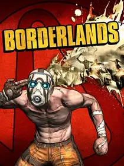

 |
|
| Tiempo de juego | 1m 10s |
| Última actividad | 16/1/2026 11:44:29 |
| Añadido | 20/11/2025 23:46:34 |
| Modificado | 20/11/2025 23:49:04 |
| Estado de finalización | Jugado |
| Librería | Playnite |
| Fuente | |
| Plataforma | PC (Windows) |
| Fecha de lanzamiento | 20/10/2009 |
| Puntuación de la Comunidad | 79 |
| Puntuación de la Crítica | 80 |
| Puntuación de usuario | |
| Género | Role-playing (RPG) Shooter |
| Desarrollador | Feral Interactive Gearbox Software |
| Editor | 2K Games CyberFront Feral Interactive Take-Two Interactive |
| Característica | Co-Operative Multiplayer Single Player Split Screen |
| Enlaces | 🌟GOTY Enhanced |
| Tag | |
Si te gustan los números saltando de la cabeza de los enemigos cuando les disparás, tenés que agradecerle a este juego. Borderlands inventó el género. Es la mezcla perfecta entre la adicción de juntar cosas del Diablo y la acción de un shooter en primera persona.
Lo primero que te entra por los ojos es el estilo gráfico. Se llama Cel-Shading y hace que todo parezca un cómic en movimiento. Gracias a esto, el juego se sigue viendo espectacular aunque pasen los años. No busca ser realista, busca ser canchero.
Pero la posta son las armas. No hay diez o veinte armas. Hay millones. Literalmente. El juego tiene un sistema que genera armas aleatoriamente. Podés encontrar una escopeta que dispare cohetes, un revólver que prenda fuego a la gente o un rifle de francotirador que derrita escudos con ácido. La búsqueda del arma perfecta es una droga.
Elegís entre cuatro personajes, cada uno con su árbol de habilidades RPG. Lilith se hace invisible, Brick rompe todo a piñas, Mordecai usa a su pájaro asesino y Roland tira una torreta.
Y ni me hagas empezar con el humor. Desde el robot Claptrap hasta los psicópatas que te gritan frases incoherentes mientras corren hacia vos con una granada en la mano. Es un delirio hermoso para jugar con amigos.